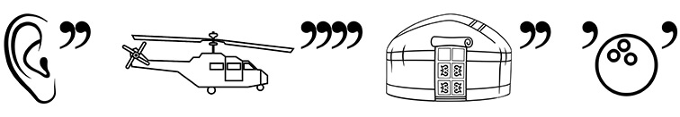
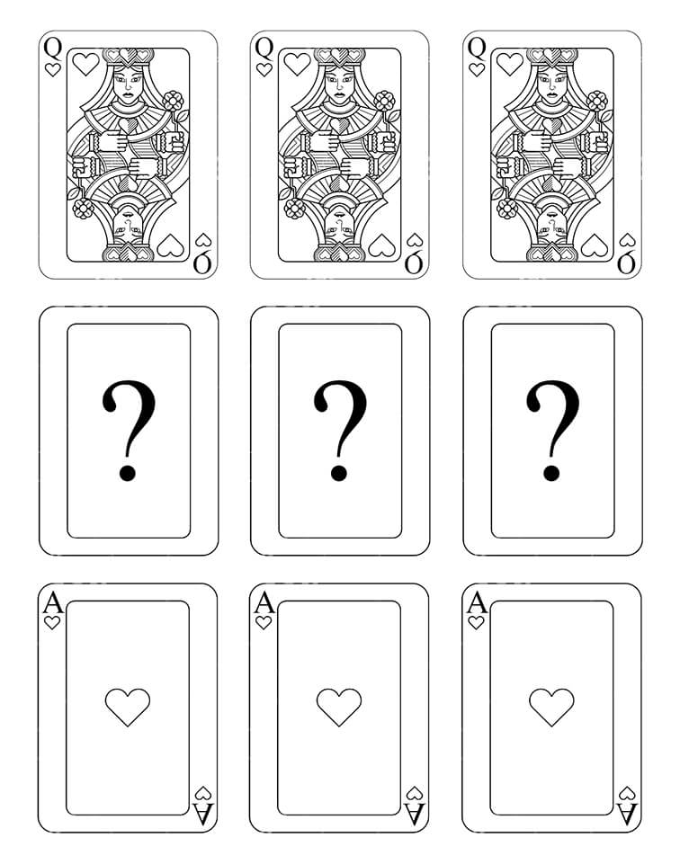
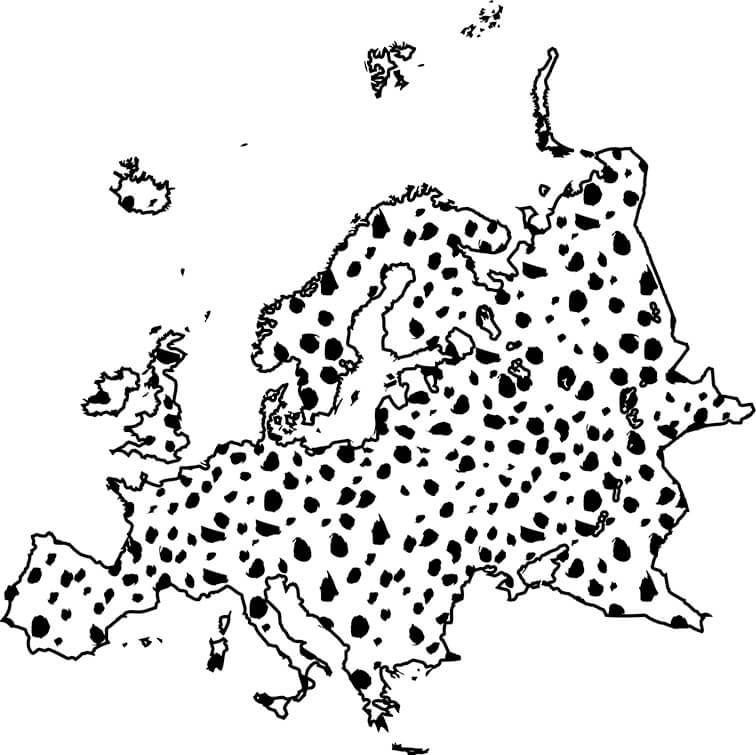

КВЕСТ ПО ВЫСТАВКЕ «САЛЬВАДОР ДАЛИ. СВЯЩЕННОЕ ПОСЛАНИЕ»
Несколько рекомендаций по прохождению квеста!
- Не бросайтесь проходить квест сразу — для начала хотя бы минимально ознакомьтесь с экспозицией.
- Отвечать на задания можно в любом удобном для вас порядке.
- Если совсем не удаётся решить какое-то задание, то смело переходите к следующему. Пока будете решать следующее задание, можете натолкнуться на ответ к предыдущему 😉
- Чтобы пройти квест, обращайте внимание на работы всех авторов.
- Если вы правильно ответите на все вопросы квеста, то получите приятный бонус от FARBA.
1.
Начинаем! Вам сразу повезло, ведь вам предстоит найти ответ на вопрос от генерального партнёра выставочного проекта «Сальвадор Дали. Священное послание» — компании OZ 🔥
Это и пожелание отъезжающему, а также пожелание успеха в каком-либо начинании. В принципе, это же можем сказать вам и мы перед началом нашего квеста. Вам же надо найти работу, в названии которой фигурирует это пожелание. Уже получилось? Тогда доставайте свои калькуляторы и ПОСЧИТАЙТЕ КОЛИЧЕСТВО ПЕРСОНАЖЕЙ на работе?
К сожалению, это неправильный ответ. Попробуйте еще раз! Помните, что можно воспользоваться видеоподсказками или нажать на кнопку «Узнать ответ».
Когда мы отправляем кого-либо в дорогу, то зачастую говорим: «В добрый путь!». «В добрый путь!» — это и название картины Евгении Олехнович. На этой картине можно насчитать 7 (СЕМЬ!) СЛОНОВ.
Правильный ответ: 7.
Подсказка
2.
Как у вас обстоят дела с ребусами? Подсказываем, если не знаете: сколько запятых или апострофов — столько букв надо убрать в начале или в конце слова, которое изображено. В ребусе мы загадали вам название одной работы на выставке.
Как у вас обстоят дела с ребусами? Подсказываем, если не знаете: сколько запятых или апострофов — столько букв надо убрать в начале или в конце слова, которое изображено. В ребусе мы загадали вам название одной работы на выставке. Разгадали ребус? У вас должно было получиться название работы из экспозиции. Если справились с ребусом и нашли нужную работу, то напишите, пожалуйста, сколько цветов использовано на этой работе. Шутка! Мы же не злодеи, поэтому просто напишите, КАКОЕ ИЗОБРЕТЕНИЕ ТОМАСА ЭДИСОНА можно увидеть на этой работе?
К сожалению, это неправильный ответ. Попробуйте еще раз! Помните, что можно воспользоваться видеоподсказками или нажать на кнопку «Узнать ответ».
Давайте для начала разгадаем ребус. На первой картинке у нас «ухо», две запятые после — убираем две последние буквы, остаётся — «у». Вторая картинка — «вертолёт», четыре запятые после — убираем четрые последние буквы, остаётся — «верт». Третья картинка — «юрта», две запятые в конце — убираем две последние буквы, остаётся — «юр». Последняя картинка — «шар», запятая до и запятая после — убираем по одной букве и остаётся «а». Складываем все получившиеся кусочки и получаем — «увертюра». Теперь находим работу Георгия Скрипниченко с таким названием и пишем изобретение Томаса Эдисона, которое есть на работе «Увертюра» — это ЛАМПОЧКА.
Правильный ответ: лампочка.
Подсказка
3.
Это и название серии фильмов 1996, 1997, 2000, 2011, 2022 и 2023 годов, и название серии картин самого известного норвежского художника. А также ЭТО — название работы на выставке. «Пффф, легкотня», — скажете вы, вероятно. Подойдите к загаданной работе, осмотритесь вокруг и ЗАКОНЧИТЕ ФРАЗУ ДВУМЯ СЛОВАМИ: «Была ... ...»
К сожалению, это неправильный ответ. Попробуйте еще раз! Помните, что можно воспользоваться видеоподсказками или нажать на кнопку «Узнать ответ».
Серия фильмов и серия картин — это «Крик». Теперь найдите работу Владимира Гладкевича с таким названием и осмотритесь вокруг. На стене напротив работы можно увидеть надпись «Была ДОПУЩЕНА ОШИБКА». Два пропущенных слова — ДОПУЩЕНА ОШИБКА.
Правильный ответ: допущена ошибка.
Подсказка
4.
Давайте в этом задании проверим ваше терпение!
Условие достаточно банальное: два слова в названии этой работы отличаются всего одной буквой. Более 200 работ в экспозиции — слабо найти нужную? Не уверены, что у вас получится, но если уж нашли...
То напишите, пожалуйста, КАКОЙ ВИД АТМОСФЕРНЫХ ОСАДКОВ фигурирует в описании работы, которая расположилась слева?
К сожалению, это неправильный ответ. Попробуйте еще раз! Помните, что можно воспользоваться видеоподсказками или нажать на кнопку «Узнать ответ».
Нужная вам работа авторства Сальвадора Дали называется «СУЕТа СУЕТ». А в описании работы слева можно найти «... омой меня, и буду белее СНЕГА». Нужный вам вид атмосферных осадков — СНЕГ.
Правильный ответ: снег.
Подсказка
5.
Знаете ли вы хоть что-то о биографии загадочного Дали? Сейчас проверим! Соотнесите, пожалуйста, даты и события из его жизни.
| 1 | 1919 | А | Умирает Елена Дьяконова (Гала). |
| 2 | 1933 | Б | Получил предложение от Джузеппе Альбаретто проиллюстрировать новое издание Библии. |
| 3 | 1934 | В | Иллюстрирует «Дон Кихота» Сервантеса. |
| 4 | 1957 | Г | Женитьба на Елене Дьяконовой (Гала). |
| 5 | 1963 | Д | Первое путешествие в США. Билет для Дали приобретает Пабло Пикассо. |
| 6 | 1982 | Е | Участвует в студенческих волнениях, за что на сутки попадает в тюрьму. |
К сожалению, это неправильный ответ. Попробуйте еще раз! Помните, что можно воспользоваться видеоподсказками или нажать на кнопку «Узнать ответ».
Если прочитаете информационные стенды, то всё у вас получится и без подсказки.
Правильный ответ: 1Е2Д3Г4В5Б6А.
Подсказка
6.
Приветствуем вас в нашем интеллектуальном казино!
На изображении мы зашифровали название для вас нескольких работ из экспозиции. Когда найдёте эти работы (а вы их точно заметите!), то напишите, пожалуйста, КАКОЙ, скажем так, «МУЗЫКАЛЬНЫЙ ИНСТРУМЕНТ» расположился под этими работами?
К сожалению, это неправильный ответ. Попробуйте еще раз! Помните, что можно воспользоваться видеоподсказками или нажать на кнопку «Узнать ответ».
На зашифрованном изображении вы видите ТРИ ДАМЫ и ТРИ ТУЗА, а между ними пропущены ТРИ КОРОЛЯ. Когда подойдете к этому триптиху Дениса Чубукова, то единственное что увидите внизу — это ТРУБА системы отопления. Соответственно, скажем так, «музыкальный инструмент», который вам нужен — это и есть ТРУБА.
Правильный ответ: труба.
Подсказка
7.
Какой был ваш любимый предмет в школе? Очень надеемся, что география!
Зашифровывать названия работ мы любим больше всего, так что ломайте голову на здоровье, но попытайтесь разгадать название зашифрованной работы. Получилось? Тогда посчитайте, РАБОТЫ КАКОГО КОЛИЧЕСТВА АВТОРОВ висят на стене вместе с зашифрованной работой.
К сожалению, это неправильный ответ. Попробуйте еще раз! Помните, что можно воспользоваться видеоподсказками или нажать на кнопку «Узнать ответ».
На изображении вы видите очертания Европы. Эти очертания все в пятнах. Если гулять по экспозиции, то найдете работу Георгия Скрипниченко «Запятнанная Европа», которая и зашифрована на изображении. На стене с этой работой располагаются работы только одного автора — Георгия Скрипниченко. Значит количество авторов — 1 (один!).
Правильный ответ: 1.
Подсказка